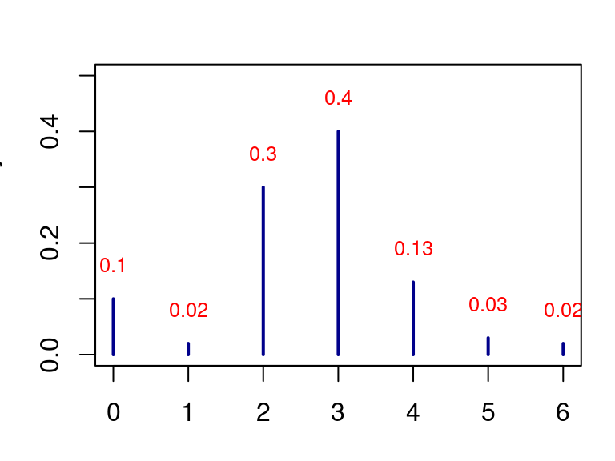
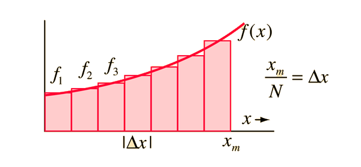
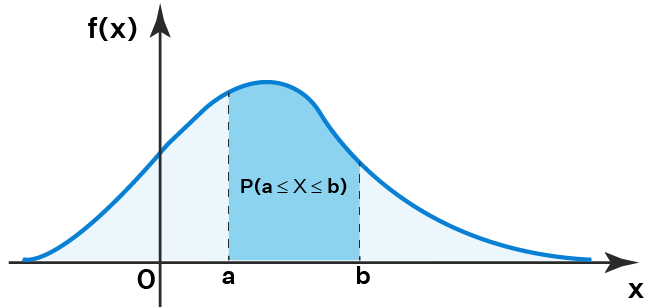
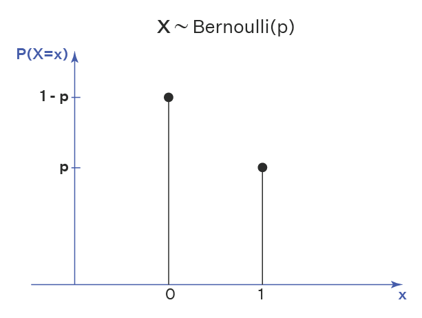
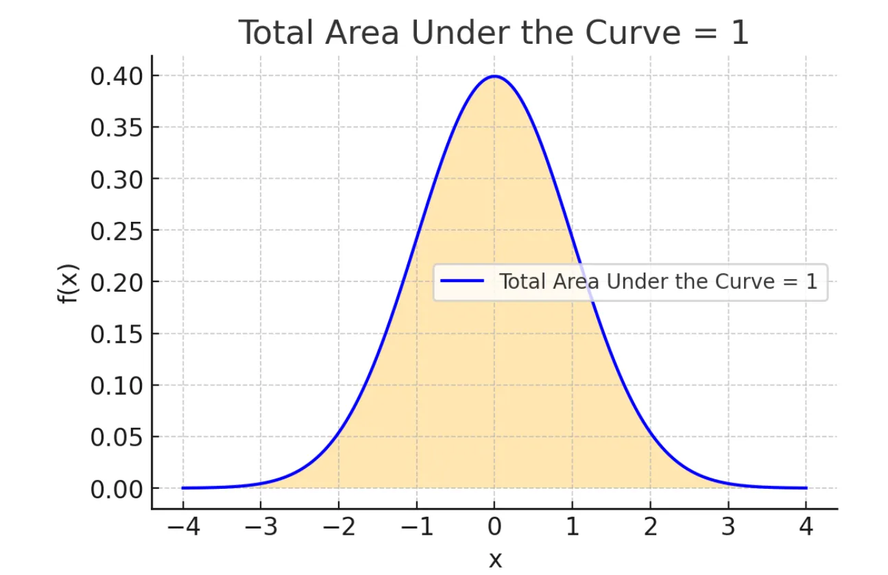

Random Variable
Discrete and Continuous Probability Distributions
Abdullah Al Mahmud
Concepts
Random Variable
Are these correct?
Discrete
No. of people dying each day
Number of heads in successive tosses.
Heights of people in Bangladesh
Continuous
GPA of students
Grade of students in individual subjects
Income tax paid by people
Integration
- \(\int x^3+2x\)
- \(\int_2^3 x^2+x\)
- Relationship between integration (I) and differentiation(D).
Answer
\(f(x) \to I \to D \to f(x)\)
Test with \(f(x) = x^2\)
Integration and Area

Source: hyperphysics- Area = Integration = Probability (if [0,1])
- \(Area = height \times width = \int f(x) \times dx\)
Probability Distribution
Example
Results of an unbiased die throw
| x | 1 | 2 | 3 | 4 | 5 | 6 |
|---|---|---|---|---|---|---|
| P | \(\frac 1 6\) | \(\frac 1 6\) | \(\frac 1 6\) | \(\frac 1 6\) | \(\frac 1 6\) | \(\frac 1 6\) |
Biased
| x | 1 | 2 | 3 | 4 | 5 | 6 |
|---|---|---|---|---|---|---|
| P | \(\frac 1 7\) | \(\frac 2 7\) | \(\frac 1 7\) | \(\frac 1 7\) | \(\frac 1 7\) | \(\frac 1 7\) |
Number of Heads in Coin Toss
A coin is tossed twice
S = {HH, HT, TH, TT}
- X = number of heads in the tosses
- What are the possible values of x?
- x = 0, 1, 2
Fill the probabilities
| x | 0 | 1 | 2 |
|---|---|---|---|
| p(x) |
- N:B: X is variable & x is value
PDF vs PMF Curve

Continuous
PMF

Discrete
PDF and PMF Conditions

Source: upgrad.com- \(0 \le f(x) \le 1\)
- \(\displaystyle \int_{-\infty}^\infty f(x)dx = 1\)
PMF
- \(0 \le P(X=x) \le 1\)
- \(\sum P(x_i) = 1\)
- Thus the sum of all possible outcomes is zero
PDF and PMF Properties
Probability Density Function (continuous)
- \(\displaystyle \int_{{\, - \infty }}^{{\,\infty }}{{f\left( x \right)\,dx}} = 1\)
- \(P\left( {a \le X \le b} \right) = \int_{{\,a}}^{{\,b}}{{f\left( x \right)\,dx}}\)
- \(P(X=x)=0\) (theoretically, why?)
Probability Mass Function (discrete)
- \(\displaystyle \sum_{{\, - \infty }}^{{\,\infty }}{{f\left( x \right)\,dx}} = 1\)
- \(P_x(X) = P(X=x)\)
PMF Problem 01
\(\displaystyle P(x) = \frac{x+1}{k}; x= 1,2,3,4\)
- k = ?
- \(P(X \ge2)\)
- \(P(X \le 3)\)
- \(P(2 < X \le 5\)
PMF Problem 02
Given, \(P(x) = \frac{2x+k}{56}; x = -3, -2, -1, 0, 1, 2, 3\)
Discrete or Continuous?
- k = ?
- Find probability of each value of x
- Find \(P(-2 \le x \le 2)\)
More PMF
- \(P(x) = \frac{1}{14} (a+2x); x = -3, -2, -1, 0, 1, 2, 3\)
- \(P(x) = k(x-2); x = 3, 4,5,6,7,8\)
- \(P(x) = \frac{x-1}{k}; x=2,3,4,5\)
- \(P(x) = \frac{3-|4-x|}{k}; x=2,3,4,5,6\)
- \(p(x) = \frac{x+4}{30}; x=0,1,2,3,4\)
PMF problem from coin
An unbiased coin is tossed four times and the number of times the heads are obtained is denoted by x. Determine the probability mass function.
- \(S = \{HHHH, HHHT, \cdots\}\)
- \(x = 0, 1, 2, 3, 4\)
- \(P(X = 2) = \frac{4C_2}{2^4}\)
- \(P(x) = \frac{4C_X}{2^4}\)
PDF Problem 01
\(\displaystyle f(x) = kx(x-1); 1\le x \le 5\)
- Find k
- \(P(X>1)\)
- \(P(X \le 3)\)
- \(P(2 \le x < 4)\)
PDF Problem 02
\(f(x) = k(x+1); 0\lt x \lt 1\)
- \(P(X=2)=?\)
- \(k=?\)
- \(P(0.4 \lt X \lt 2)=?\)
- \(\int_{0.4}^1 f(x) + \int_{1}^2 f(x) \to 0\)
More PDF
- \(f(x) = 2x; 0 < x < 1\)
- \(f(x) = \frac{1}{30} (3+2x); 2 < x < 5\)
- \(f(x) = ax^2; 0 < x < 4\)
- \(f(x) = kx^2 + kx + \frac 18; 0 < x < 8\)
- \(f(x) = kx; 0 < x < 4\)
- \(f(x) = 3x^2; 0 \le x \le 1\)
- \(f(y) = k(3y+5); 1 < y < 5\)
- \(f(z) = \frac29 (3z-z^2); 0 \le x \le 3\)
Problems Archive
Cumuluative Distribution Function
F(x) or cdf accumulates all of the probability less than or equal to.
| x | 1 | 2 | 3 | 4 | 5 | 6 |
|---|---|---|---|---|---|---|
| P (x) | \(\frac 1 7\) | \(\frac 1 7\) | \(\frac 2 7\) | \(\frac 1 7\) | \(\frac 1 7\) | \(\frac 1 7\) |
| F (x) | \(\frac 1 7\) | \(\frac 2 7\) | \(\frac 4 7\) | \(\frac 5 7\) | \(\frac 6 7\) | \(1\) |
Find
- \(P(X<4)\)
- \(P(3<X<6)\)
cdf definition
\(F_X(x) = P(X\le x)\)
Discrete
\[F(x) = \sum_{X\le x} P(x)\]
Continuous
- \[F_{X}(x) = \int_{-\infty}^x f_X(t)dt\]
- Find cdf for \(f(x) = 2x; 0\le x \le 1\)
- \(\int \to x^2\)
Answer
\[\begin{eqnarray} F(x) = \begin{cases} x^2/2, & 0\le x \le 1 \\ 0, & \text{otherwise} \end{cases} \end{eqnarray}\]
cdf properties
- \(P(a\le x \le b) = F(b)-F(a)\)for \(a\lt b\); what if \(a \lt x \lt b?\)
- For continuous x, \(f(x) = \frac{d}{dx}[F(x)]\)
- \(F(-\infty) =0 , F(+\infty) = 1\)
Joint Probability Function
Let, \(I = Infected\), and \(V = Vaccinated\)
| \(I\) | \(\bar I\) | Total | |
|---|---|---|---|
| \(V\) | 3 | 276 | 279 |
| \(\bar V\) | 66 | 473 | 539 |
| Total | 69 | 749 | 818 |
Find the probability that
- a vaccinated person is infected
- a non-vaccinated person is uninfected
- These are joint probabilities \(\to\) P(x,y)
- \(P(x,y) =P(x) \cdot P(y)\) if \(x\) and \(y\) are independent.
Joint-Marginal-Conditional
Let, \(I = Infected\), and \(V = Vaccinated\)
| \(I\) | \(\bar I\) | Total | |
|---|---|---|---|
| \(V\) | 3 | 276 | 279 |
| \(\bar V\) | 66 | 473 | 539 |
| Total | 69 | 749 | 818 |
Find the probabilities that
- a vaccinated person is infected
- a non-vaccinated person is uninfected
- vaccinated if infected
- infected if not vaccinated
- vaccinated
- uninfected
Joint PF Properties
- \(P(x,y) \ge 0\)
- \(\Sigma\Sigma P(x,y)=1\)
Coin-Die
| Die/Coin | 1 | 2 | 3 | 4 | 5 | 6 |
|---|---|---|---|---|---|---|
| H (1) | H1 | H2 | H3 | H4 | H5 | H6 |
| T (0) | T1 | T2 | T3 | T4 | T5 | T6 |
X = Outcome of coin toss
Y = Outcome of die throw
x = 0, 1; y = 1, 2, 3, 4, 5, 6
Construct the distribution.
Joint-Marginal-Conditional Revisited
| Exam (X) \(\to\) Result (Y) \(\downarrow\) |
PSC | JSC | SSC | HSC | Total |
|---|---|---|---|---|---|
| Passed | 30 | 26 | 23 | 25 | 104 |
| Failed | 12 | 13 | 10 | 14 | 49 |
| Absent | 5 | 2 | 3 | 4 | 14 |
| Total | 47 | 41 | 36 | 43 | 167 |
- Marginal: \(P(Pass) = P(x_1)=P(x_1,y_1)+P(x_1,y_2)+P(x_1,y_3)\)
- \(P(Absent) = P(x_3) = P(x_3,y_1)+P(x_3,y_2)+P(x_3,y_3)\)
Marginal Probability
Consider the previous table
Joint probability: \(P(x_i, y_j); i = 1,2, \cdots m; j = 1,2, \cdots n\)
Marginal probability \(\to P(x_i) \leftarrow P(x_i, y_j)\)
- For x: \(P(x_i) = \sum_{j=1}^n P(x_i, y_j); i = 1,2, \cdots m\)
- For y: \(P(y_i) = \sum_{i=1}^m P(x_i, y_j); j = 1,2, \cdots n\)
- What about continuous x?
Marginal Probability Properties
- \(P(x_i) \ge 0\) and \(P(y_i) \ge 0\)
- \[\sum_{i=1}^m P(x_i)=\sum_{j=1}^n P(y_j)=1\]
Summing marginal probabilities will give 1.
Joint PMF Example
\(P(x,y) = \frac{x+y}{9}; x=0,1,2; y = 0, 1\)
- Find marginal probabilities
- Check properties (sum)
- \(P(x) = \frac{2x+1}{9}\)
Joint PMF 2
\(P(x,y) = \frac{x+y}{28}; x=0,1,; y = 0, 1,2,3\)
Joint PDF Example
\(f(x,y) = \frac{2x+y}{3}; 0 \le x \le 1.5\) and \(0 \le y \le 1\)
Conditional Probability Function
Like Bayes Theorem
\(P(X_i|y_j) = \frac{P(x_i,y_j)}{P(y_j)}; P(y_j) \gt 0\)
Properties
- \(\sum_{j=1}^m P(x_i|y_j)=\sum_{i=1}^m P(y_j|x_i)=1\)
Conditional Probability Example
\(P(x,y) = \frac{x+y}{9}; x=0,1,2; y = 0, 1\)
Find \(P(X|Y)\) and \(P(Y|X)\)
Find for continuous X as well.
Find k for pdf
\(f(x) = kx^2+kx+\frac 1 8; 0 \lt x \lt 2\)
- Find k
- Find \(P(1 \lt X \lt 2)\)

www.statmania.info | Abdullah Al Mahmud | Press space or arrow to change slides